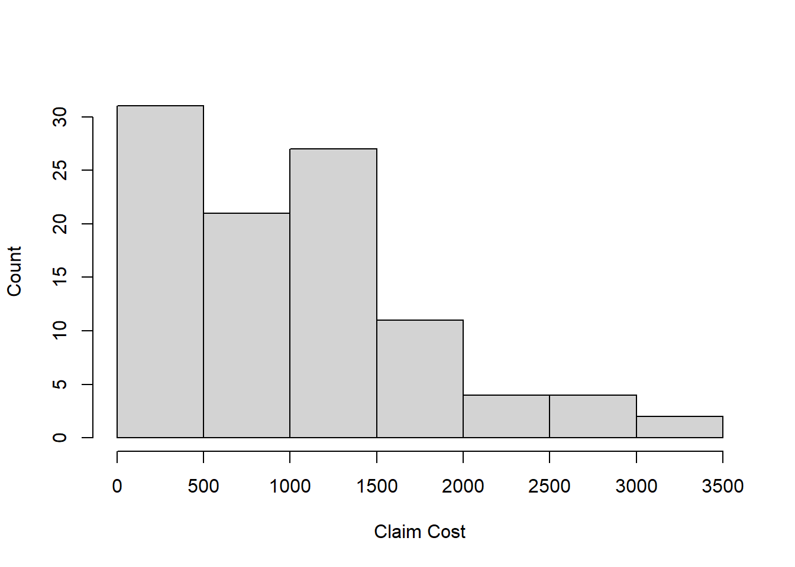
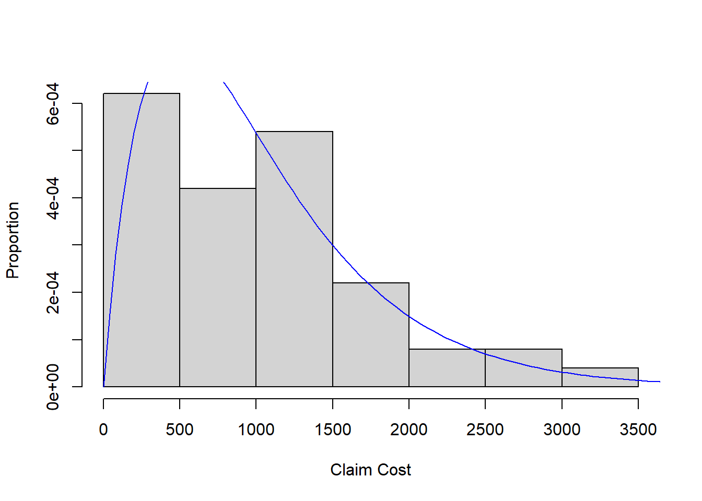

Chapter 10 Likelihood-Based Inferences
Previously, we discussed approximate sampling distribution theory for maximum likelihood estimators. Recall that if \(\hat\theta\) is the MLE of \(\theta\), the parameter of a distribution family \(P_\theta\), then (under some technical conditions) \[\hat\theta \stackrel{\cdot}{\sim} N(\theta, I(\theta)^{-1})\] for large \(n\) where \(I(\theta)\) is the Fisher information \[I(\theta) = -E\left[\frac{\partial^2}{\partial \theta} \ell(\theta;X_1, \ldots, X_n)\right]\] for a random sample \(X_1,\ldots, X_n\) from \(P_\theta\).
In this chapter we discuss how to use this (and other) approximate (large sample) sampling distributions to make inferences about population parameters.
10.1 Wald tests and CIs
A \(100(1-\alpha)\%\) Wald approximate CI for a scalar parameter \(\theta\) has the form \[\left(\hat\theta \pm z_{1-\alpha/2}\sqrt{I(\hat\theta)^{-1}}\right)\]
This CI is straightforward to obtain by the same argument we have used before. Start with the identity \[1-\alpha \approx P\left(z_{\alpha/2} < \frac{\hat\theta - \theta}{\sqrt{I(\theta)^{-1}}} < z_{1-\alpha/2}\right)\] which follows from the approximate pivot discussed above, and in Chapter 2. Then, simply multiply by the standard error \(\sqrt{I(\theta)^{-1}}\), subtract \(\hat\theta\) from both sides, and multiply by \(-1\) to get \[1-\alpha \approx P\left(\hat\theta - z_{1-\alpha/2}\sqrt{I(\theta)^{-1}} < \theta < \hat\theta + z_{1-\alpha/2}\sqrt{I(\theta)^{-1}}\right)\] Finally, since \(\theta\) is unknown, replace \(\theta\) by \(\hat\theta\) in the standard error to yield the so-called Wald type CI \[\left(\hat\theta \pm z_{1-\alpha/2}\sqrt{I(\hat\theta)^{-1}}\right).\]
If \(\theta = (\theta_1, \ldots, \theta_p)\) is a vector, then, the marginal Wald approximate CI for \(\theta_j\) is given by \[\left(\hat\theta_j \pm z_{1-\alpha/2}\sqrt{I(\hat\theta)_{j,j}^{-1}}\right).\] where \(I(\theta)\) is the Fisher information matrix and \(I(\theta)_{j,j}\) is the \(j^{th}\) diagonal entry of the Fisher information matrix.
Besides CIs, the approximate pivot may be used for hypothesis tests as well. To test \(H_0:\theta = \theta_0\) versus \(H_a: \theta\ne \theta_0\) for a scalar parameter \(\theta\), reject the null hypothesis if \(|z| > z_{1-\alpha/2}\) where \[z=\frac{\hat\theta - \theta_0}{\sqrt{I(\theta_0)^{-1}}}.\] (Alternatively, one may use \(\hat\theta\) in the standard error rather than \(\theta_0\). Under the null hypothesis, there is little difference.)
For a vector parameter \(\theta\) let \[W = (\hat\theta - \theta_0)^\top I(\theta_0)^{-1}(\hat\theta - \theta_0).\] Under \(H_0:\theta = \theta_0\), \(W\stackrel{\cdot}{\sim}\chi^2(p)\). And, if we use the estimated covariance: \[V = (\hat\theta - \theta_0)^\top I(\hat\theta)^{-1}(\hat\theta - \theta_0),\] then, \(V\stackrel{\cdot}{\sim} F(p, n-p)\). So, we get either a Chi-Squared or F-based test for a vector parameter.
10.1.1 Example: Auto insurance claims
We have the following data on 100 auto insurance claims:

Given the auto claims are positively skewed, we will assume a Gamma distribution reasonably models the population and fit a Gamma to the data by maximum likelihood.
The Gamma density has form \[f(x;\alpha, \beta) = \frac{\beta^\alpha}{\Gamma(\alpha)}x^{\alpha-1}e^{-x\beta}, \quad x,\alpha, \beta>0\] where \((\alpha, \beta)\) are shape and rate parameters. The likelihood for a random sample of size \(n\) is \[L(\alpha, \beta; X_1, \ldots, X_n) = \left(\frac{\beta^\alpha}{\Gamma(\alpha)}\right)^n \prod_{i=1}^n (x_i)^{\alpha - 1} e^{-\beta\sum_{i=1}^n x_i}.\] Taking the log, we have the loglikelihood function (suppressing dependence on data) \[\ell(\alpha, \beta) = n\alpha\log \beta - n\log \Gamma(\alpha) + (\alpha - 1)\sum_{i=1}^n \log(x_i) - \beta\sum_{i=1}^n x_i.\] Next, we need the gradient (the first derivatives) w.r.t. the parameters \((\alpha,\beta)\): \[\frac{\partial \ell}{\partial \alpha} = n\log\beta - \text{DiGamma}(\alpha) + \sum_{i=1}^n \log(x_i)\] where the function DiGamma\((\alpha)\) is the logarithmic derivative of the Gamma function. Next, we have \[\frac{\partial \ell}{\partial \beta} = \frac{n\alpha}{\beta} - \sum_{i=1}^n x_i.\]
We also need the second derivatives in order to compute the Fisher information:
\[\frac{\partial^2 \ell}{\partial \alpha^2} = -\text{TriGamma}(\alpha)\]
where the TriGamma function is (you guessed it!) the second logarithmic derivative fo the Gamma function \(\Gamma(\alpha)\).
\[\frac{\partial^2 \ell}{\partial \alpha\partial\beta} = n/\beta.\]
\[\frac{\partial^2 \ell}{\partial \beta^2} = -\frac{n\alpha}{\beta^2}.\]
You may have guessed we will not be able to compute the MLEs by hand by solving \(\frac{\partial \ell}{\partial \alpha}=0\) and \(\frac{\partial \ell}{\partial \beta} = 0\). Instead, we need an iterative solver (an algorithm). In R we can use optim to solve for the MLEs. Or, we can code our own version of Newton’s method…
n <- length(data)
loglik <- function(param){
sum(dgamma(data, shape = param[1], rate = param[2], log = TRUE))
}
grad <- function(param){
g1 <- n*log(param[2]) - n*digamma(param[1]) + sum(log(data))
g2 <- n*param[1]/param[2] - sum(data)
return(c(g1,g2))
}
H <- function(param){
h1 <- -n*trigamma(param[1])
h2 <- n/param[2]
h3 <- -n*param[1]/(param[2]^2)
return(matrix(c(h1,h2,h2,h3),2,2))
}
m <- mean(data)
v <- var(data)
beta0 <- m/v
alpha0 <- m*beta0
delta <- 0.00001
diff.step <- 1
par.old <- c(alpha0, beta0)
steps <- 0
while((diff.step > delta) & (steps < 100)){
par.new <- par.old - solve(H(par.old))%*%matrix(grad(par.old),2,1)
diff.step <- max(abs(par.new - par.old))
steps <- steps + 1
par.old <- par.new
}
par.old## [,1]
## [1,] 1.966640491
## [2,] 0.001948425loglik(par.old)## [1] -780.5969H(par.old)## [,1] [,2]
## [1,] -65.86955 51323.52
## [2,] 51323.51588 -51803341.74solve(H(par.old))## [,1] [,2]
## [1,] -6.657160e-02 -6.595499e-05
## [2,] -6.595499e-05 -8.464786e-08mle.optim <- optim(c(alpha0, beta0), loglik, gr = grad, control = list(fnscale = -1), method = 'BFGS', hessian = TRUE)## Warning in dgamma(data, shape = param[1], rate = param[2], log = TRUE): NaNs
## produced
## Warning in dgamma(data, shape = param[1], rate = param[2], log = TRUE): NaNs
## produced
## Warning in dgamma(data, shape = param[1], rate = param[2], log = TRUE): NaNs
## produced
## Warning in dgamma(data, shape = param[1], rate = param[2], log = TRUE): NaNs
## produced
## Warning in dgamma(data, shape = param[1], rate = param[2], log = TRUE): NaNs
## produced
## Warning in dgamma(data, shape = param[1], rate = param[2], log = TRUE): NaNs
## produced
## Warning in dgamma(data, shape = param[1], rate = param[2], log = TRUE): NaNs
## produced
## Warning in dgamma(data, shape = param[1], rate = param[2], log = TRUE): NaNs
## produced
## Warning in dgamma(data, shape = param[1], rate = param[2], log = TRUE): NaNs
## produced
## Warning in dgamma(data, shape = param[1], rate = param[2], log = TRUE): NaNs
## produced
## Warning in dgamma(data, shape = param[1], rate = param[2], log = TRUE): NaNs
## produced
## Warning in dgamma(data, shape = param[1], rate = param[2], log = TRUE): NaNs
## produced
## Warning in dgamma(data, shape = param[1], rate = param[2], log = TRUE): NaNs
## producedmle.optim## $par
## [1] 1.966641732 0.001948426
##
## $value
## [1] -780.5969
##
## $counts
## function gradient
## 34 4
##
## $convergence
## [1] 0
##
## $message
## NULL
##
## $hessian
## [,1] [,2]
## [1,] -65.86951 54017.32
## [2,] 54017.31581 -70328540.92solve(mle.optim$hessian)## [,1] [,2]
## [1,] -4.101660e-02 -3.150366e-05
## [2,] -3.150366e-05 -3.841603e-08